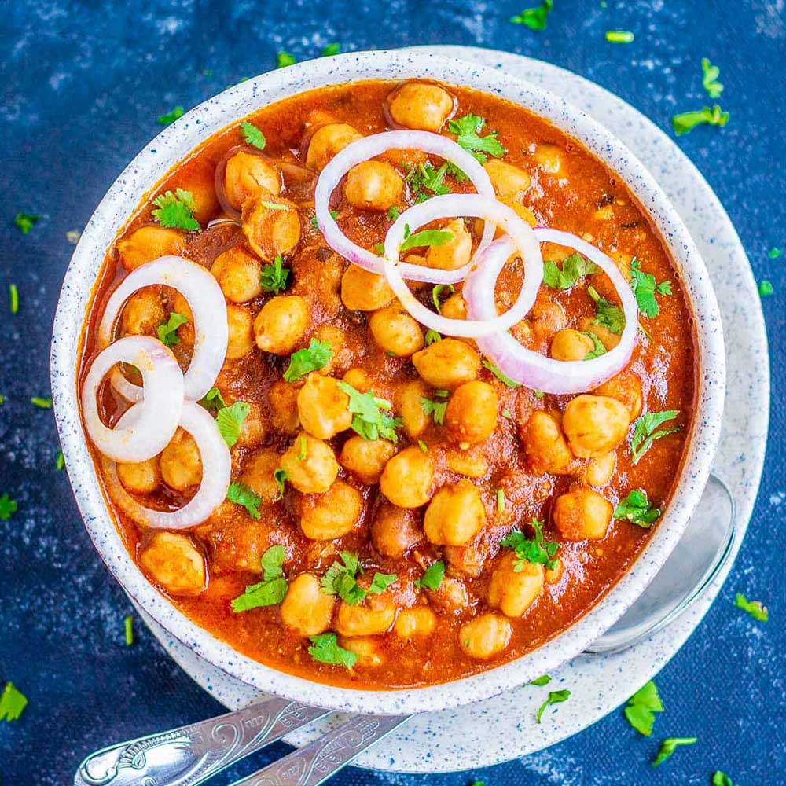

Easy Chickpea Masala

Ingredients
- 1 tbsp vegetable or olive oil
- 1 onion, finely chopped
- 1 tbsp garam masala
- 4 garlic cloves, crushed
- 2 inch piece fresh root ginger, peeled and grated
- 2 red finger chillies, very finely chopped
- 20g fresh coriander, finely chopped, reserving a few leaves for garnish
- 400g tin chickpeas, drained
- 2 x 400g tin chopped tomatoes
- 1-3 tsp caster sugar, to taste (optional)
- pinch salt, to taste
- 1-2 tbsp lemon juice, to taste
Method
- Heat the oil in a medium pan, add the onion and garam masala and cook for 5-8 minutes, until soft and translucent.
- Add the garlic, ginger, chillies and the chopped coriander, setting some coriander aside for garnish. Cook over a low heat for 3-5 minutes until fragrant.
- Add the chickpeas and tomatoes and bring to the boil. Reduce the heat and simmer uncovered for 20 minutes, until reduced to the consistency of thick soup. If it is looking too thick, add a splash of water.
- Remove from the heat, taste, and add the sugar, salt and lemon juice to taste.
- Serve sprinkled with reserved coriander leaves.